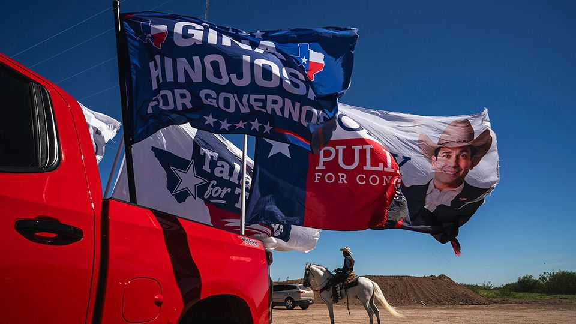
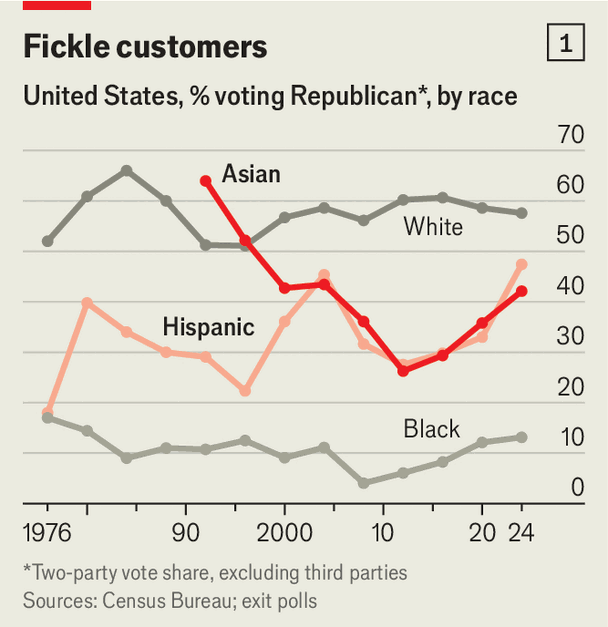
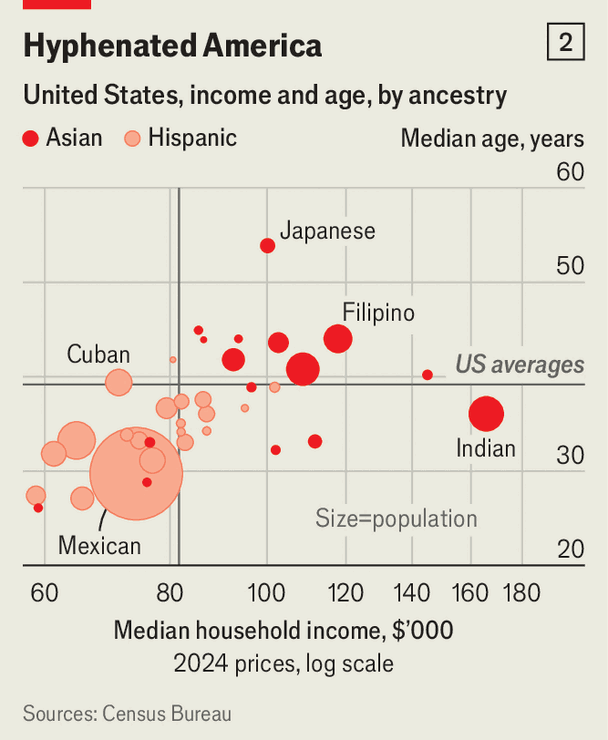
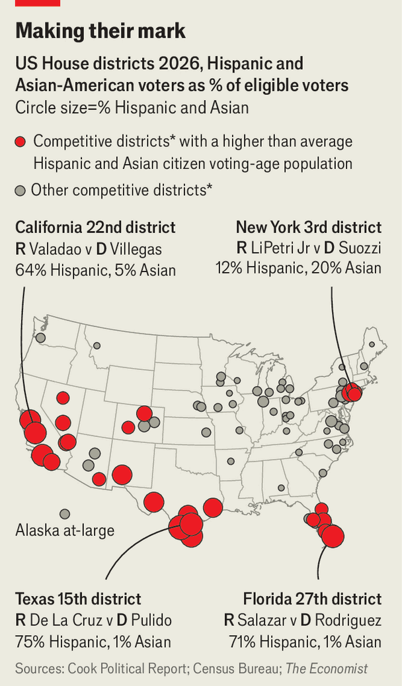

America’s decisive voters are its most recent arrivals
Hispanic- and Asian-Americans will shape this year’s midterm elections and more

Oct 29th 2026
THE DEATH knell for Kamala Harris’s presidential campaign first sounded in Loudoun County, Virginia. Home to affluent voters, one-quarter of whom are of Asian descent, the county had plumped decisively for Joe Biden in 2020. When it was reported, early on election night in 2024, that Ms Harris had won by 16 points compared with Mr Biden’s 25, pundits wondered if there had been a glitch.
The county may now move left once more. At an early-voting centre, volunteers recently handed out sample ballots in Hindi. Arjun, a man in his 50s, described a case of “buyer’s remorse” after backing Donald Trump two years ago. “Everything he said was a lie,” he explained. Outside Patel Brothers, a bustling supermarket, one woman said she will vote for Democrats because Mr Trump’s cuts have gutted care for her disabled child. Other former Trump supporters said they were repelled by the Iran war, high prices, cuts to visas, cruel deportations and reductions in the federal workforce. “A lot of my friends lost their jobs,” said Mohammed, an architect.
Mr Trump’s declining popularity in Loudoun in some ways mirrors trends across the country: nationally, his net approval rating is -27. But these swings, towards Mr Trump two years ago and away from him since then, are not distributed evenly across America. Instead, they have been concentrated in states and districts that are geographically disparate but share a striking demographic similarity: they have large shares of Asian or Latino voters.
Democrats and Republicans alike have too often conflated demography with destiny. For the left, the growing ranks of non-white voters seemed to ease the need to win over culturally conservative whites, while Republicans have feared that immigrants would secure lasting Democratic power. Indeed, the share of eligible voters who are Latino has risen from 9% to 16% in the past 20 years, while the share of Asian-Americans has risen from 3% to 5%. But both sides were wrong. America’s fastest-growing ethnicities are also its most politically open-minded. That gives the country’s newest Americans disproportionate sway in determining its direction.
In this country of immigrants, recent arrivals have shaped party politics throughout its history. The latest wave began after 1965, when immigration quotas were lifted and people began arriving once more, mainly from Latin America and Asia. They did not become rigid partisans. Exit polls showed that Ronald Reagan won 37% of Hispanics in 1980 (he described them as Republicans who “don’t know it yet”), and George W. Bush won a robust 44% in 2004. In the 1990s the Republican Party fared even better with Asians, winning them outright in 1992 and 1996.
It was not until 2012, when exit polls found Barack Obama winning 73% of Asian-Americans and 71% of Latinos, that strategists started seeing these groups as reliable Democrats. “With New Support Base, Obama Doesn’t Need Right-Leaning Whites Anymore”, read one headline in the Atlantic in 2013. Mr Trump’s victory in 2016 seemed to vindicate the idea that Republicans should run up their numbers with white voters, rather than reach out to ethnic minorities.

Yet despite Mr Trump’s often racist rhetoric, his share of the Hispanic and Asian vote inched up in 2020, a trend that accelerated in 2024, when he won 40% of Asian voters and 46% of Hispanic ones (see chart 1). In that election, according to the Co-operative Election Study (CES) at Harvard University, Asians and Latinos made up 14% of voters, but comprised 24% of those who voted for a presidential candidate from one party in 2020 and a different party four years later. That does not make them the biggest bloc of swing voters in absolute terms: non-Hispanic white voters still outnumbered them in 2024, comprising 59% of switchers. But their rejection of strict partisanship, growing numbers and reasons for changing parties are what gives them particular clout.
Even in 2012, when Mr Obama won more than 70% of Asians and Latinos, only 13% and 27% of them identified as “strong” Democrats, according to polling for The Economist by YouGov. Hispanic voters, as well as Asians, stand out for their heterodox positions, agreeing with Democrats on some topics and Republicans on others. Analysing a series of policy questions in the CES, The Economist found that around 34% of Latinos and 30% of Asians hold views which are either moderate or combine left- and right-leaning positions, compared with only 20% of white voters. Latino and Asian respondents’ views on any single issue are less likely to predict how they will respond on another subject. For example, Asians are unusually supportive of both regulating pollution and work requirements for government benefits. Hispanics are more likely than other Americans to back a ban on abortion as well as cancelling student debt.

In part, these combinations of views are a product of diverse cultural traditions between these groups and within them, as well as a range of income levels (see chart 2). They are also a reminder that newcomers do not fit neatly in pre-existing categories. Naturalised citizens are overwhelmingly Hispanic or Asian. Just 9% of Asians and one-third of Hispanics have two native-born parents (compared with 90% of whites and 77% of blacks), making them less likely to inherit a partisan identity.
For these voters the culture wars, which bind a large and growing share of white voters to a particular party, are less important. Economic issues are paramount. In polling for The Economist by YouGov in September and October, the share of respondents listing consumer prices or “jobs and the economy” as their most important issue was 57% for both Asian-Americans and Latinos, compared with 50% for black respondents and 45% for white ones.
That reflects the broader priorities of Latino and Asian-American voters. They spend more time working than the average American. Latinos are more than twice as likely as whites to start a business; Asian-Americans spend more time in school. “Even if you’re not yourself an immigrant, but you’re descended from them, you’re in this country to work hard and get ahead, and that means that economic considerations come ahead of so much else,” says Carlos Odio, a researcher who specialises in surveying Latinos. As Ruben Gallego, a Democratic senator, put it last year, “every Latino man wants a big-ass truck”, often described affectionately as la troquita.
All this set up Latino and Asian-American voters as the perfect swing group in 2024, when prices were the dominant issue. Latinos were particularly exposed to the spike in petrol prices in 2022 owing to their higher-than-average spending on cars, trucks and fuel. Later, in 2023 and 2024, the effect of inflation shifted to housing costs; that disproportionately affected Asian-Americans, who spend more on housing than other groups. This year it is Mr Trump’s turn to feel their wrath.
According to a series of large-sample polls of likely voters conducted for the Argument, a digital news company, Democrats’ margin over Republicans has risen by 17 percentage points among Hispanics and 14 among Asians since 2024, compared with ten for white voters and five for black ones. And although poll cross-tabs can be prone to errors, statewide elections since Mr Trump’s inauguration show the same trend. In gubernatorial elections in New Jersey and Virginia last year and California’s all-party House primaries in June, Democrats’ biggest gains relative to the presidential vote of 2024 were in precincts or districts with their states’ highest concentrations of Asians and Latinos.
Their discontent will play a crucial role in the midterms. Republicans in Texas pushed through a gerrymander that could net the party up to five seats in the House—if only Mr Trump could hold on to his gains in largely Hispanic south Texas. Instead, our forecasting model favours Democrats in three of these districts, and makes Republicans only narrow favourites in two more. In total, Latinos and Asian-Americans represent a larger than average share of voters in 28 battleground House races (see map).

Latinos and Asian-Americans will bring their political heft to high-profile statewide races, too. Combined, they make up 36% of the electorate in Texas and 24% in Florida, the two largest Trump-voting states. Democrats trail by just a few points in both states’ gubernatorial contests, thanks largely to leads among Hispanics of 12 points in Florida and 27 points in Texas. For the Senate, an upset in Florida is unlikely. But James Talarico is up by two points overall and 33 points among Latinos in his bid to become the first Democrat to win a Senate race in Texas since 1988.
“I’ve spent most of my career telling white, well-intentioned political consultants and candidates that Latinos aren’t a monolith,” says Chuck Rocha, a Democratic political consultant. He now says the opposite: “they’re all monolithically pissed.” Democrats are hammering the president for turbocharging consumer prices by imposing tariffs and beginning a war.
In California’s dusty, agricultural Central Valley, Randy Villegas, a Democrat, is running to unseat David Valadao, a moderate Republican in a district whose voters are two-thirds Hispanic. “I want you to raise your hand”, Mr Villegas said at a rally in Bakersfield, “if you or someone you love drives across the border to Tijuana to get cheaper prescription drugs, cheaper dental care, cheaper health care.” Hands shot up all around the room.
In addition to the economy, this year immigration looms large. Voters in both groups, who by definition have already become citizens, generally support border enforcement and take a moderate view on immigration. But they see the president’s tactics as going too far. In Florida María Elvira Salazar, a Miami-area Republican incumbent facing a tough Democratic challenger, ran an ad in September addressed to Mr Trump in which she said that “the same Hispanics who helped you get to the White House in 2024 feel betrayed today.”
In early 2025 Immigration and Customs Enforcement agents targeted California’s agricultural heartland. They are once again roaming the area ahead of the midterms. In Delano, a farm town that swung towards Mr Trump by 15 points in 2024, shop signs are mostly in Spanish and residents often greet each other with a friendly “buenos días”. Now the streets are quiet and many stores remain shuttered. “I just don’t love what’s happening with immigration,” says Griselda Aguilar, a 34-year-old mother who backed Mr Trump two years ago but attended Mr Villegas’s rally. “The way it’s been handled is inhumane.”
In the waning days of the campaign, the White House—far from easing its rhetoric on immigrants—is playing it up. J.D. Vance, the vice-president, has touted Mr Trump’s deportation campaign and wants a radical overhaul of visas for skilled workers. In Montana on October 26th, he offered adulation for Americans who “homesteaded this land” and “buried their own kin” in the state’s “beautiful soil”. Mr Trump has repeatedly warned, without evidence, that illegal voting by non-citizens will threaten the elections’ integrity.
This obsession is hardly welcoming to Asian or Latino voters, nor does it address their main concern: the economy. If they help secure victory for Democrats, the party may assume that supporters are “coming home”. The lesson of recent years, however, is that neither party should take these voters for granted. Even as more Asians and Latinos swing left, fewer identify themselves as Democrats than in 2024.
“The fact that we view it as so peculiar that Latinos are moving by 20 points is the sign of what’s wrong,” says Mike Madrid, author of “The Latino Century”. Among other constituencies, “nobody moves despite pandemic and war and recession and depression,” he says. “If people do a bad job, you fire them. Latinos are the only group doing that.” ■
Stay on top of American politics with The US in brief, our daily newsletter with fast analysis of the most important political news, and Checks and Balance, a weekly note that examines the state of American democracy and the issues that matter to voters.